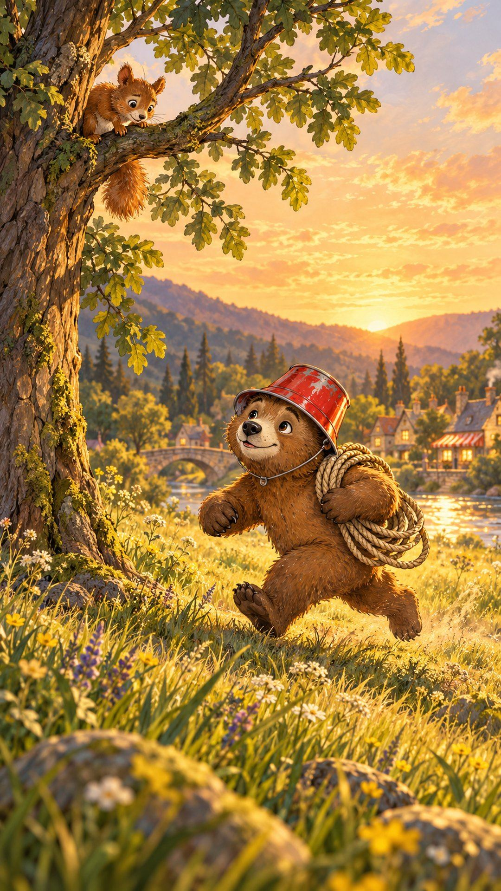
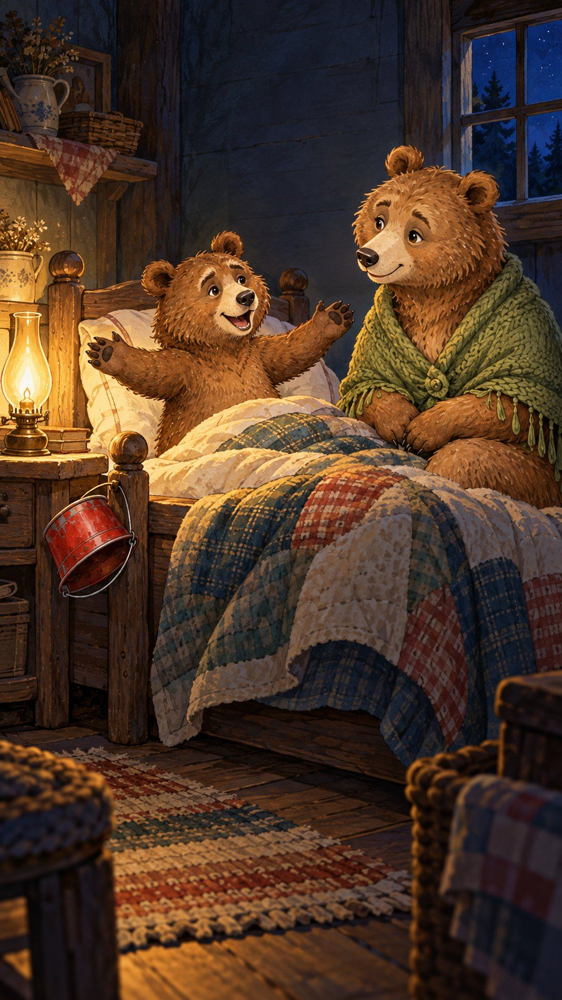
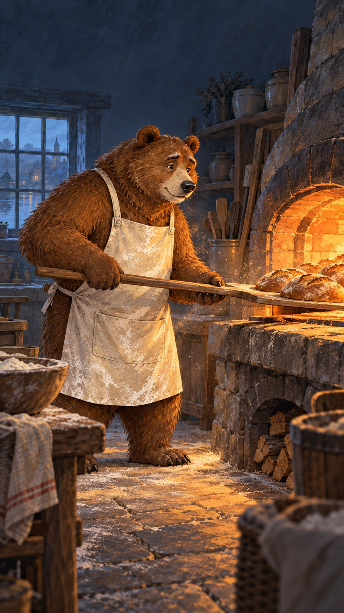
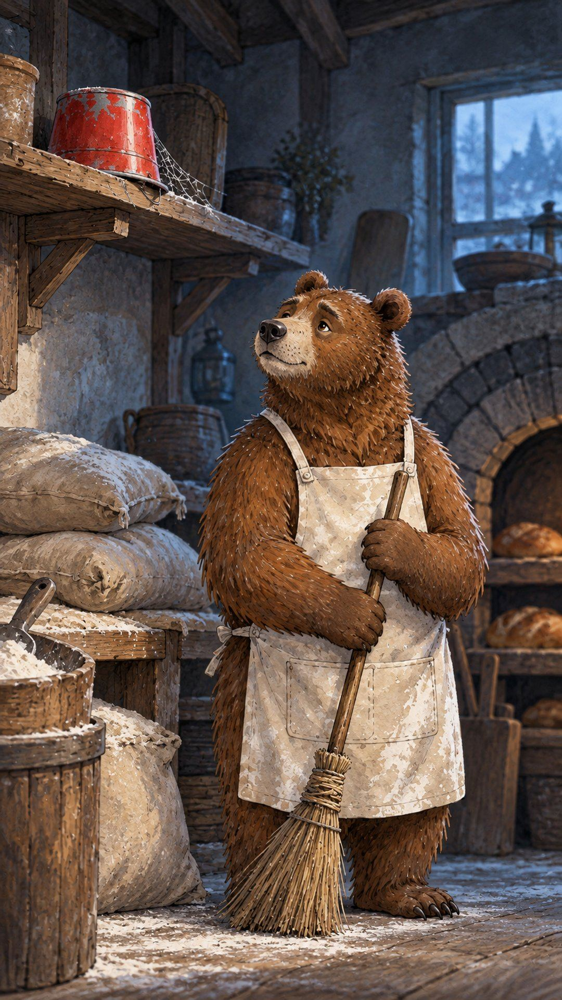
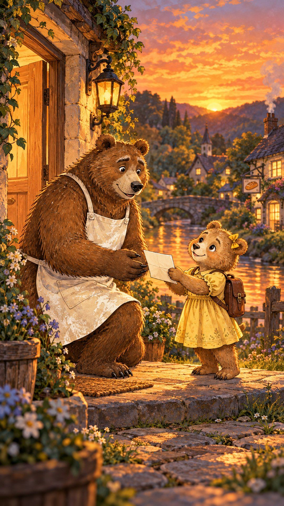
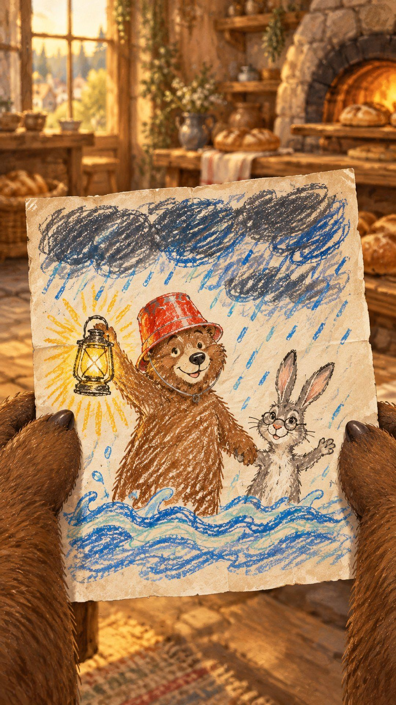
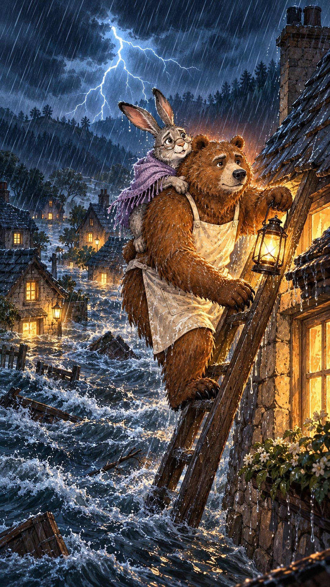
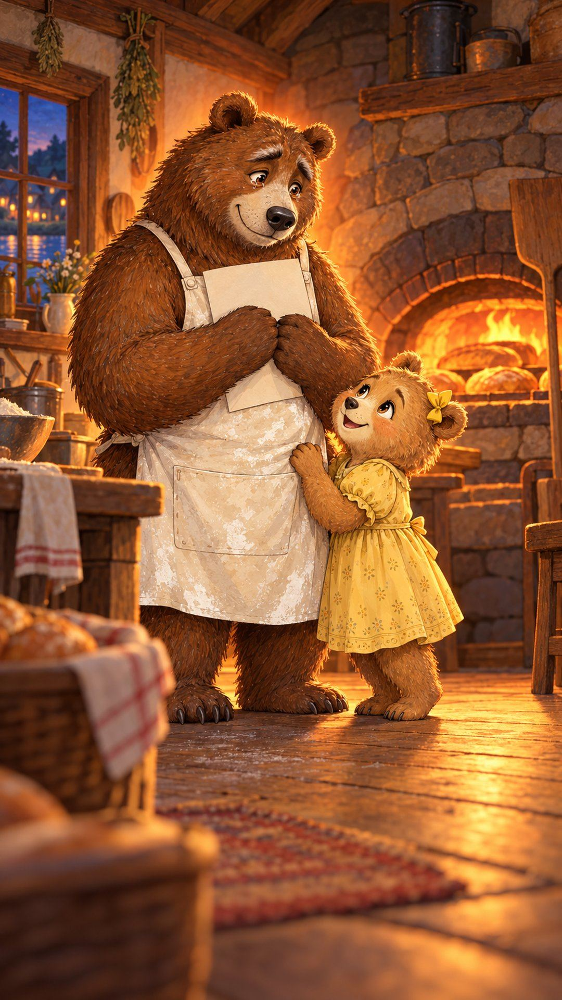
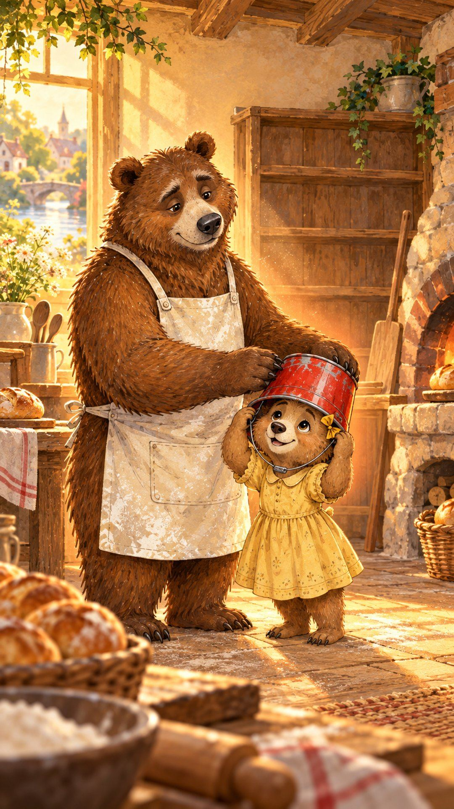

He never became a firefighter
As a cub, Milo wore a red bucket like a helmet, and ran to help whenever someone called.

“When I grow up,” he told his mom, “I’m going to save everybody.”

Then his dad got sick, and somebody had to keep the family bakery open.
Twenty years of ovens at four a.m.

The red bucket gathered dust on a shelf.
At night, he sometimes thought, “I never saved anyone.”

One evening, his daughter brought home a drawing from school: “My Hero.”

It was him.

The night the river flooded, he carried old Grandma Hare up to the roof.

“You always go first when something’s scary,” she said. “Like a firefighter.”

He took the red bucket down from the shelf, and set it on her head.

The dream never left him. It just found a different place to protect.

An original Aurelion fable.